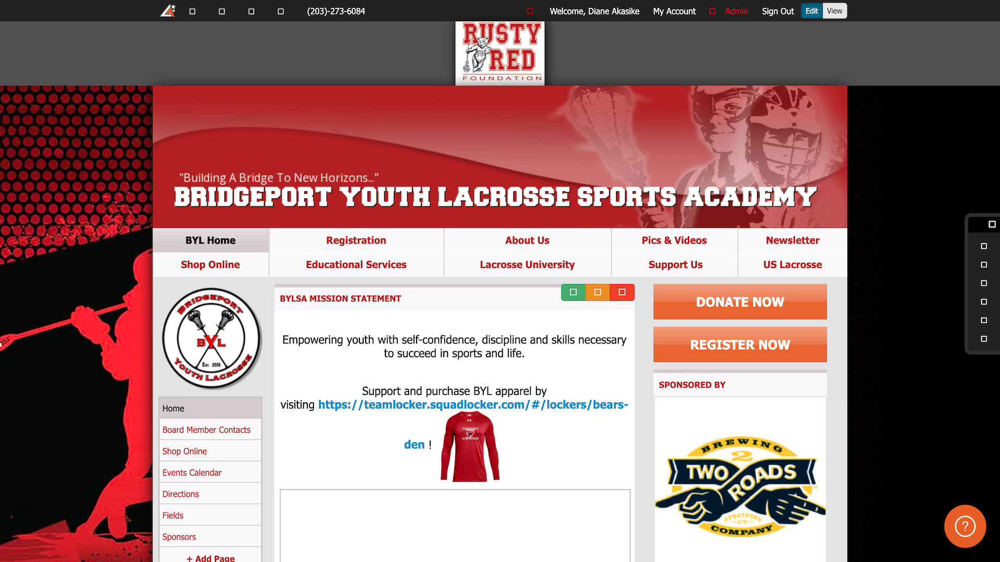
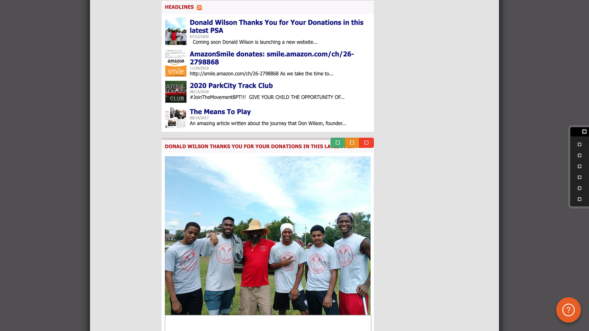
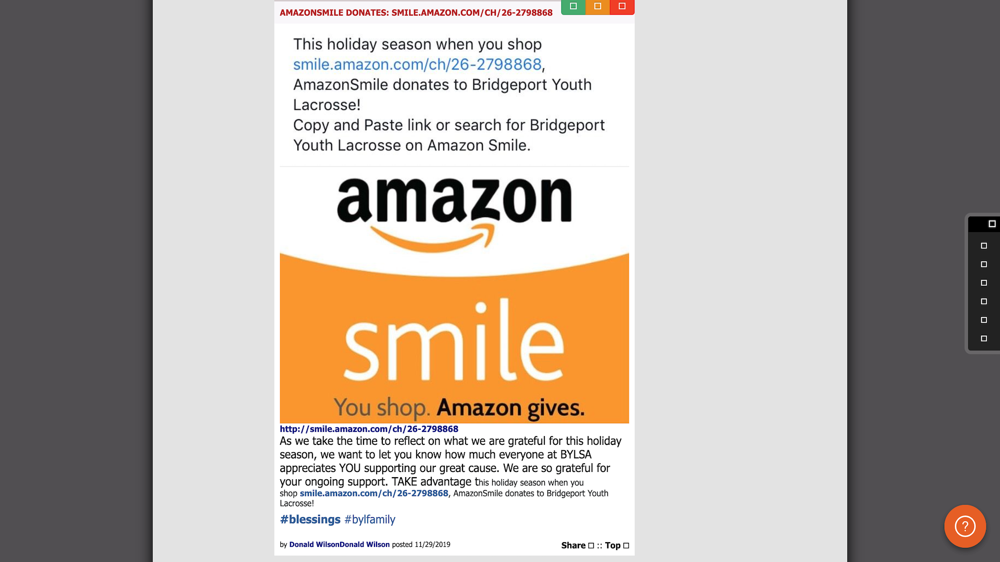

Bridgeport Youth Lacrosse Website

During the course of my final semester at Rutgers, I was a Web Development Intern for a non-profit organization called Bridgeport Youth Lacrosse. This internship was a very enlightening experience as it helped me not only improve my web development skills, but also taught me things about myself as a professional and as a person. My primary task was to reconstruct the organization's main website. Below, I will include before and after images of the website homepage.
As you will see below, the homepage was lengthy and not very visually appealing in the beginning. To improve this, I added carousels to the home page to make it more concise, which made it look less crowded and limited the amount of vertical scrolling for a better user experience. Additionally, I decided to choose a color scheme with three primary colors, black (#0f0f0f), white (#ffffff), and red (#ce2029), throughout the entire website and removed the sponsor banner from the top of the web pages to make the site more visually appealing to the user. Instead, I added a sponsor carousel at the bottom of the home page. Lastly, I included buttons that navigate to other helpful links and web pages to allow users to interact with the website.
Before
  After